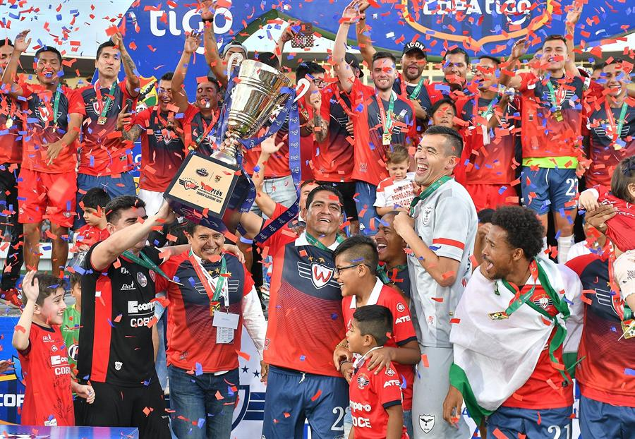

El Club Deportivo Jorge Wilstermann, más conocido como Jorge Wilstermann o simplemente Wilstermann, es un club de fútbol de la ciudad de Cochabamba, Bolivia. Fue fundado el 24 de noviembre de 1949 por un grupo de trabajadores de la línea aérea Lloyd Aéreo Boliviano. Actualmente participa en la Primera División de Bolivia.
Institucionalmente, el Club Wilstermann es la entidad deportiva más importante de Cochabamba. Deportivamente, es el club más grande y ganador en la historia del fútbol cochabambino, así mismo, debido a su historia, palmarés e hinchada, es uno de los grandes clubes del fútbol boliviano.
Los colores que identifican al club son el Rojo y Azul, la casaca y el short respectivamente. El escudo contiene la "W" de Wilstermann, 5 estrellas que reflejan la calidad del equipo, y 3 alas a cada lado que hace referencia al origen aviador que tiene el club, lo cual junto al nombre del club, rinden homenaje al primer piloto comercial de Bolivia Jorge Wilstermann.
A nivel nacional Wilstermann tiene 15 campeonatos nacionales y 8 subcampeonatos en la Primera División de Bolivia desde el inicio del profesionalismo en 1950, de los cuales tiene el récord de ser el primer y único club boliviano en lograr un tetracampeonato.
Es, junto a The Strongest, el segundo equipo con más títulos a nivel nacional en la Primera División de Bolivia. Fue el máximo ganador de la Primera División de Bolivia desde 1957 hasta 1984, siendo uno de los dos únicos clubes en haber tenido esa distinción.
A nivel internacional tiene 25 participaciones internacionales en torneos de Conmebol, siendo parte del juego inaugural de la Copa Libertadores de América, su mejor ubicación en la misma fue la llegada a semifinales en la edición de 1981, así mismo fue el primer conjunto boliviano en avanzar de fase y llegar a esa instancia en el torneo continental. Destaca también la participación en la edición 2017 donde el Rojo llegaría a los cuartos de final superando tres fases.
Su clásico rival es el Aurora, frente al cual disputa el Clásico Cochabambino. También mantiene rivalidades tradicionales frente al Bolívar, San José, The Strongest, Blooming y Oriente Petrolero.
